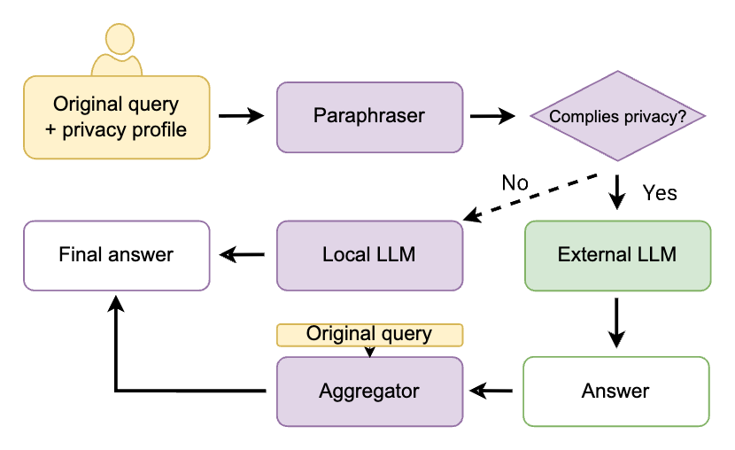

You Think LLMs Know You? You're Probably Right - and That's a Problem
I asked a language model three simple questions:
- What's my name?
- Do I smoke?
- Who's my celebrity crush?
The answers were unsettlingly accurate, arguably more so than what you'd expect from your doctor, therapist, or even your closest circle.
Large Language Models (LLMs) are becoming deeply embedded in how we write, think, and communicate. There is still a persistent misconception that interacting with LLMs is stateless or inconsequential. In practice, users routinely disclose highly sensitive information, often unintentionally.
Mireshghallah (2024) highlights the severity of this issue. Analyses of real-world human-LLM interactions reveal that users frequently disclose sensitive information, including financial data, authentication credentials, and deeply personal details about beliefs, habits, and relationships. In our own analysis of the WildChat dataset (Zhao et al., 2024), we identified concerning cases: startup founders sharing internal financial records, individuals drafting legal support letters, and even the exchange of international contracts with large financial implications.
Existing Solutions Fall Short
Most existing approaches rely on prompt sanitization: removing personally identifiable information (PII) before sending queries to external models. This often leads to utility collapse (the prompt loses what made it useful), and assumes one-size-fits-all privacy.
But privacy is personal. What is sensitive to one user may be irrelevant to another. Even inside one query, users may want to share some attributes but not others.
Traditional PII frameworks also miss a crucial point: privacy goes beyond explicit identifiers. Subtle signals such as religion, habits, or parenthood can be equally revealing, especially when combined.
Privacy Profiles: Letting Users Define Privacy
To address this, we introduce privacy profiles: simple natural-language instructions that specify what a user is willing (or unwilling) to share, e.g., "Don't include anything about my free time" or "I'm okay sharing that I'm a Swiftie".
Privacy profiles turn privacy into a user-defined constraint. Conceptually, this aligns with contextual integrity (Nissenbaum, 2009): privacy is preserved when information flows match user expectations and context-specific norms.
A Practical Pipeline for Privacy-Preserving LLM Use

- A lightweight local model receives the original query and the privacy profile.
- It rewrites the query, removing only disallowed information.
- A verifier checks whether privacy constraints are satisfied.
- If not, the query is blocked or handled locally.
- The sanitized query is sent to a stronger external LLM.
- A local aggregator reconstructs the final answer to match original intent.
PEEP: A Benchmark for Real-World Privacy
Dataset link: PEEP on Hugging Face.
To evaluate this setup, we introduce PEEP (Prompts, Extracted Entities with Privacy), a large-scale benchmark of 15,000+ real user queries across 64 languages.
Each query is annotated with 21 fine-grained private attributes, from hard identifiers (names, identification numbers, phone numbers), to demographics (age, nationality), biographical details (occupation, health status), and softer traits (habits, beliefs, relationships).
Each query is paired with a synthetic privacy profile that simulates individual user preferences.
PROFIT: Training Models to Respect Your Privacy
We evaluated multiple models in this framework and observed a consistent pattern. LLMs outperform traditional PII tools, but still leak protected information at non-trivial rates, including very large models around 70B parameters. Smaller models face a different challenge: balancing privacy preservation and task performance.
Leakage is not uniform. Explicit identifiers (e.g., credit cards, emails) are often protected, while subtle attributes (religion, habits, parenthood) leak much more. This reflects not only detection limitations, but model biases about what is acceptable to disclose.
To address this, we introduce PROFIT (PRivacy-Optimised FIltered Training). Rather than naive fine-tuning, PROFIT selects training examples that jointly satisfy privacy and utility constraints, and filters out examples that fail either objective. We then train rewriter, verifier, and aggregator with this curated signal.
Key findings:
- A fine-tuned 8B model can outperform a 70B model.
- Leakage of protected attributes drops significantly.
- Better sharing of authorized information improves answer quality.
In short, smaller, well-trained models can be both safer and more useful.
Conclusion
We are entering a world where LLMs can infer deeply personal attributes while users remain unaware of how much they reveal. Our work suggests that the trade-off between advanced LLM capabilities and privacy is not inevitable. Closing the gap will require better models, better tools, and a more realistic view of how people actually use AI.
Paper link: Controlling What You Share.